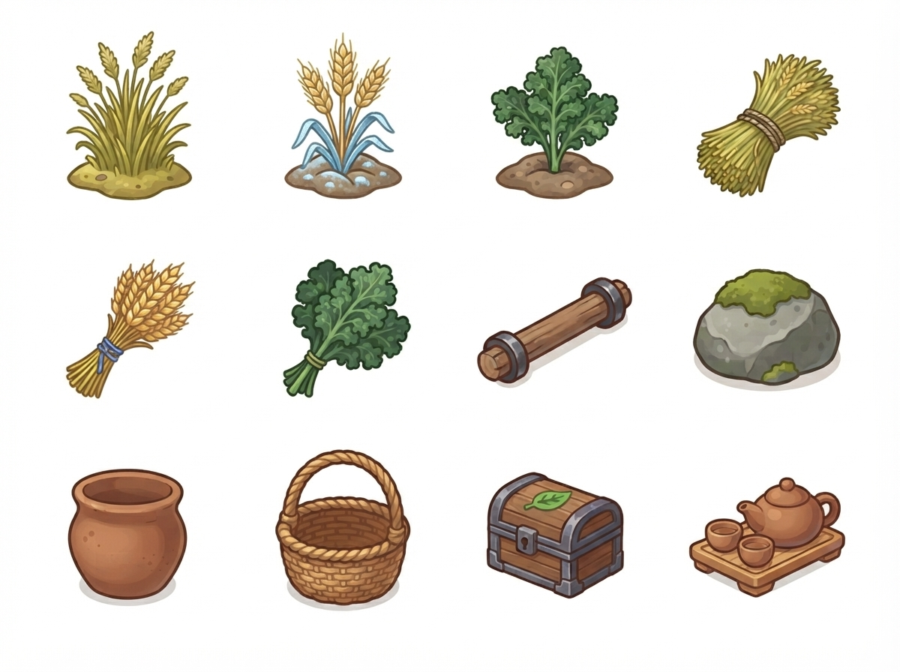
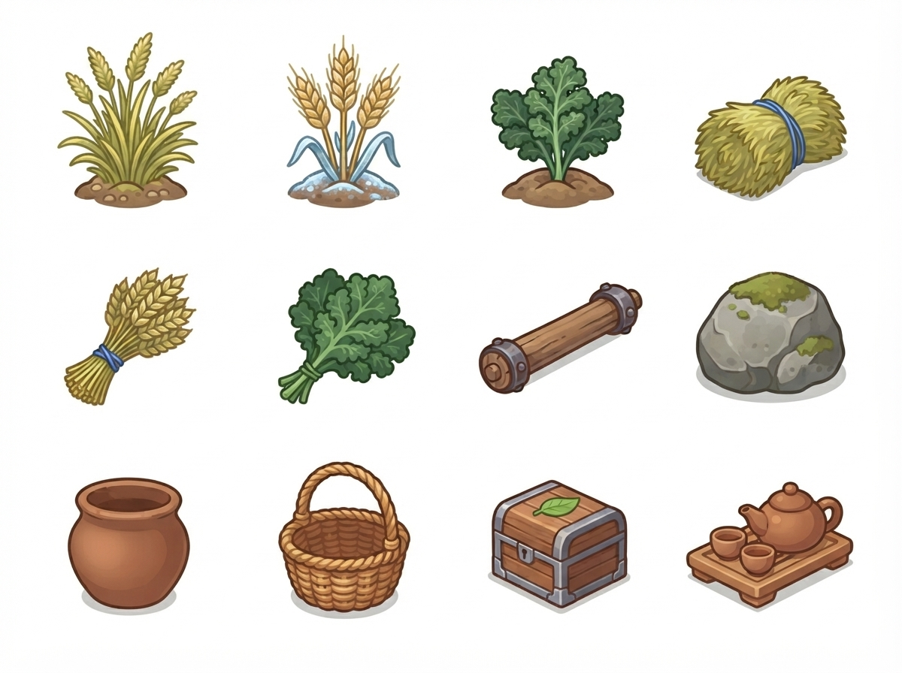
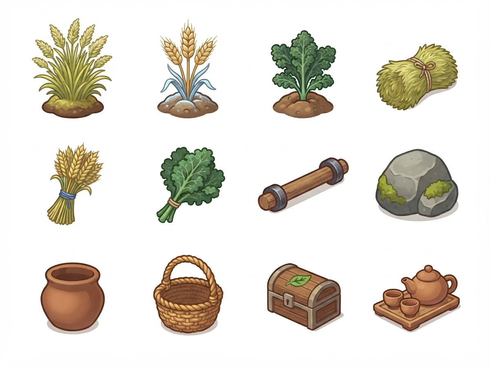

Green frame = the pick used in the game. To swap: python3 .claude/skills/openart-pictures/fetch.py pick sheet56-items-10 <version>, then import again.



A sprite sheet of exactly 12 separate objects in 3 rows of 4, in exactly the art style of reference image 1 (use it only for the style): bright, friendly mobile-game cartoon, thick rounded dark outlines, flat colours with simple cel shading, chunky cute proportions, small soft shadow under each. Plain pure white background, evenly spaced with wide white space between them, none touching, each one solid piece with no loose bits, crumbs, sparkles or motion lines beside it. No text, no letters, no numbers, no labels, no frames, no grid lines, no people, no hands. Row 1: (1) one ripe meadow hay plant growing out of a small mound of earth: a tuft of tall golden-green grass with feathery seed heads; (2) one ripe winter wheat plant growing out of a small mound of earth: sturdy golden stalks with thick bearded ears and a little frost-blue tint on the leaves; (3) one ripe winter kale plant growing out of a small mound of earth: dark green curly leaves; (4) a tied bundle of golden-green hay. Row 2: (5) a small sheaf of winter wheat ears tied with a blue string; (6) a bunch of dark green curly kale leaves tied together; (7) a wooden cart axle: a thick round wooden bar with an iron band at each end; (8) one big grey boulder, round and heavy with a patch of moss. Row 3: (9) a plain brown clay pot with a wide mouth; (10) a round woven wicker basket with a handle, empty; (11) a small wooden healer's chest with a green leaf painted on the lid, closed; (12) a tea set: a round clay teapot and two small cups standing close together on a little wooden tray as one object.